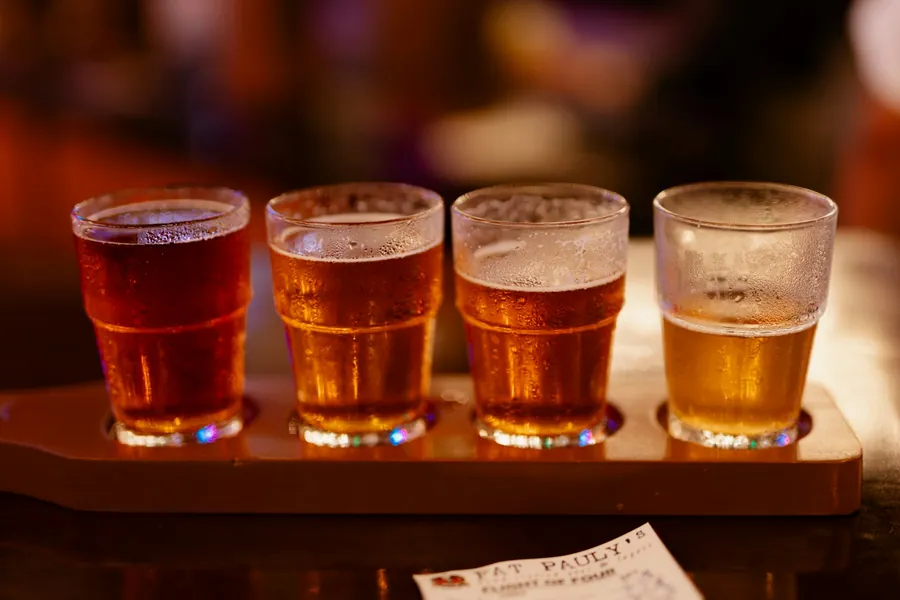
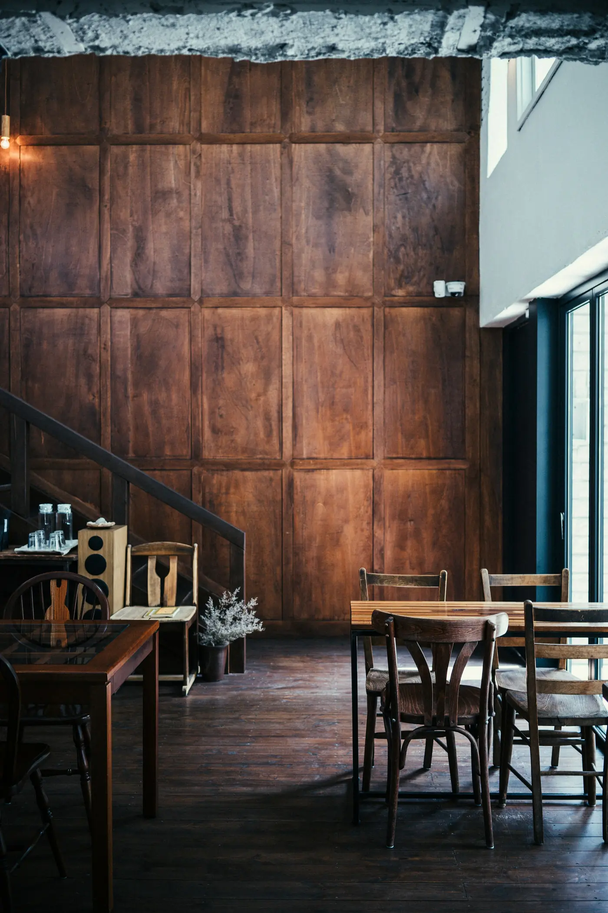

Every Friday, 7 pm · Cieplice Spa
Live music
Acoustic sets on the terrace, and in winter in the room by the window. Free entry, just book a table.
Strona przykładowa
Dla restauracji albo sieci lokali, która chce przyciągać turystów i gości z okolicy, a menu i godziny zmieniać sama, bez dzwonienia do informatyka.
5 900–7 900 zł jednorazowo
cena zależy od liczby lokali i języków
+ 199 zł miesięcznie opieki
hosting, kopie zapasowe, aktualizacje i zmiany treści
Wypróbuj na tej stronie: przełącz język w nagłówku (PL / DE / EN) i otwórz rezerwację stolika.
Restauracja, adresy, telefony, menu i opinie są wymyślone. Strona pokazuje, jak może wyglądać serwis Państwa restauracji.
Events
Every week there's something on at one of our restaurants. For events it's worth booking a table early.
Every Friday, 7 pm · Cieplice Spa
Acoustic sets on the terrace, and in winter in the room by the window. Free entry, just book a table.
September and October · All restaurants
A seasonal menu of forest mushrooms: porcini soup, pierogi with saffron milk caps and pork tenderloin in chanterelle sauce.
See the menu
First Saturday of the month, 6 pm · Karpacz
Five beers from local breweries, with the brewer telling the story of each. Plus small plates from our kitchen.

December to March, daily from 5 pm · Karpacz
Mulled wine, apple fritters and a seat by the fire after a day on the slopes.

Birthdays, christenings and company events for up to 30 guests in our Old Town room. We take care of the menu and decorations, you take care of your guests.
Ask about dates: 75 000 00 21We'll confirm your booking by text message or phone.